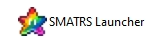
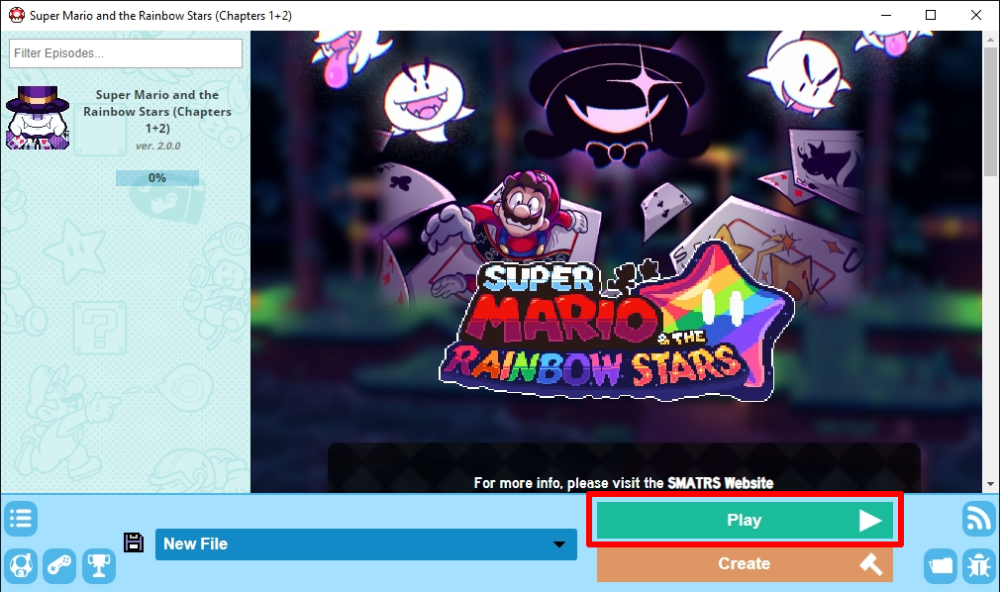

Installation
This game is made with the SMBX2 engine, which is needed to be able to play. You can download SMATRS with SMBX2 using the Download All button. Windows may give you a warning that the game is harmful, however this is a false positive.

After downloading all, extract the ZIP file (This is important!) then open SMATRS Launcher and you should get a view of the episode list, which SMATRS should be on. The ZIP file can be deleted.

Select it, and then simply click on Play. The game should now open! Keep in mind it might take a bit to load.
Additional Info
Chapter 1+2 length: around 4-8 hours
Download size (All): 727 MB (458 MB zipped)
All credits can be found in the _credits file.
Want to continue from your existing save file? Download the updater!
For those that already have SMBX2, use ''Download Episode'', and then extract the folder into data/worlds.
For running the game on Mac/Linux, you will need to install Wine or any other program that is able to run Windows applications.
Tips
Resizing the game window is strongly recommended, as it defaults to SMBX2's original resolution.
To turn on vsync, go to data/config/luna.ini in SMATRS's folder and set vsync to on. (This removes screen tearing)
For the best experience, leaving Graphical Quality on High in settings is recommended.
Multiplayer is local only, but for playing online Parsec is recommended!
Collecting every Rainbow Shard in every level unlocks something special!
Episode Download
Already have SMBX2 installed and know what you're doing? You can install the episode separately, instead:
If Demo 2 is also in the worlds folder, you'll be able to carry over the save file after starting the game!